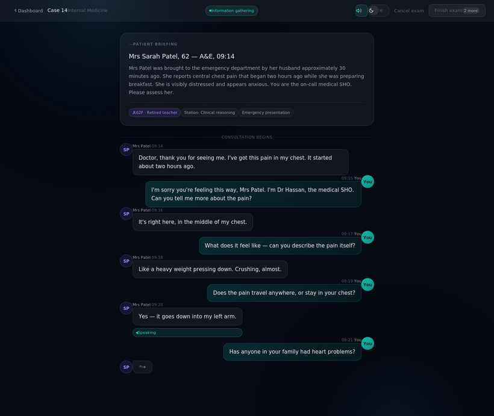
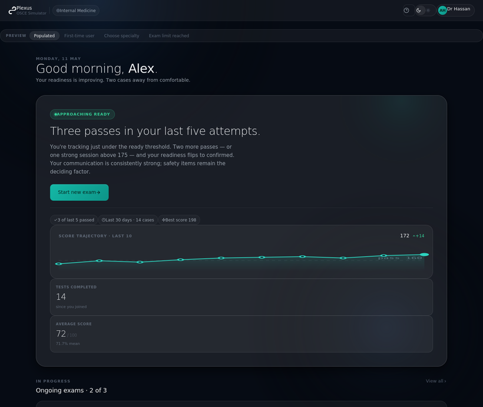
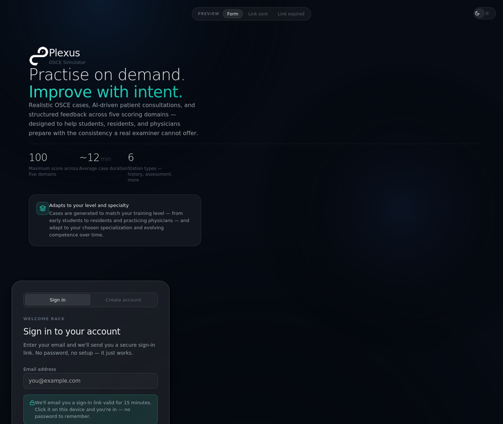
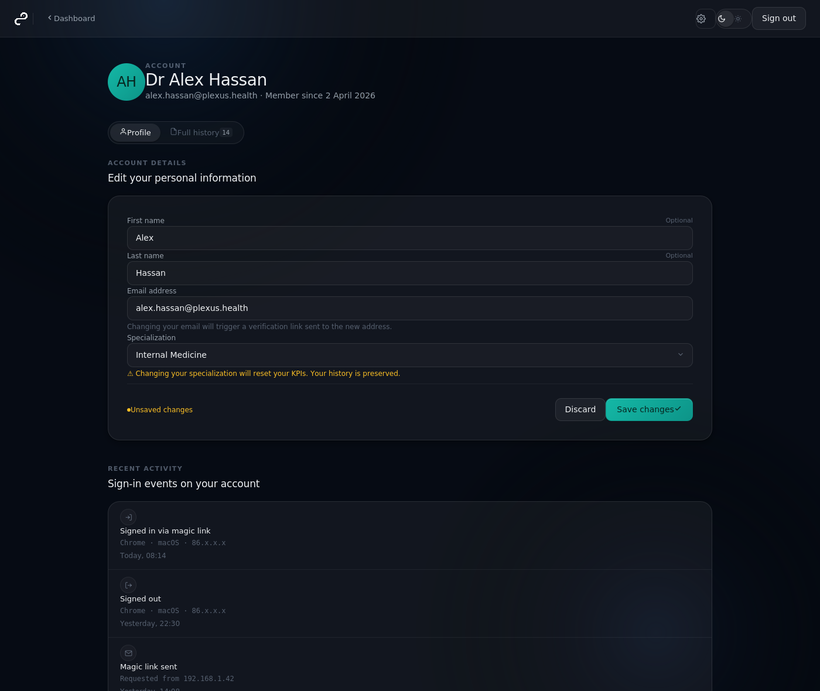
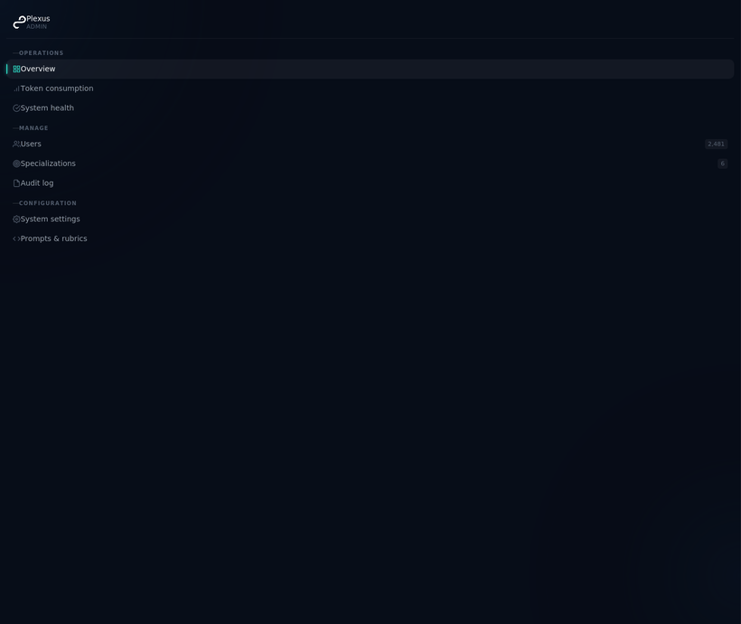
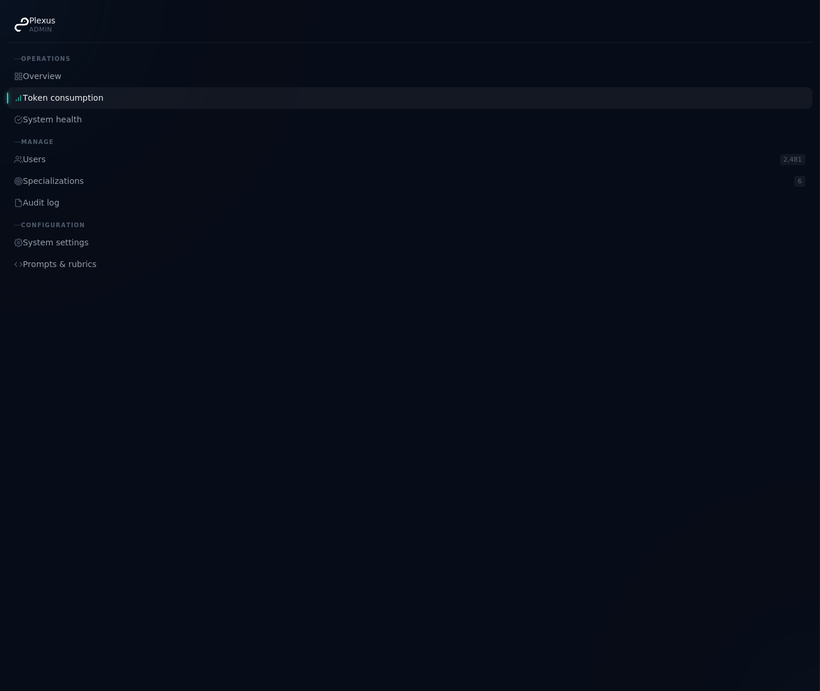
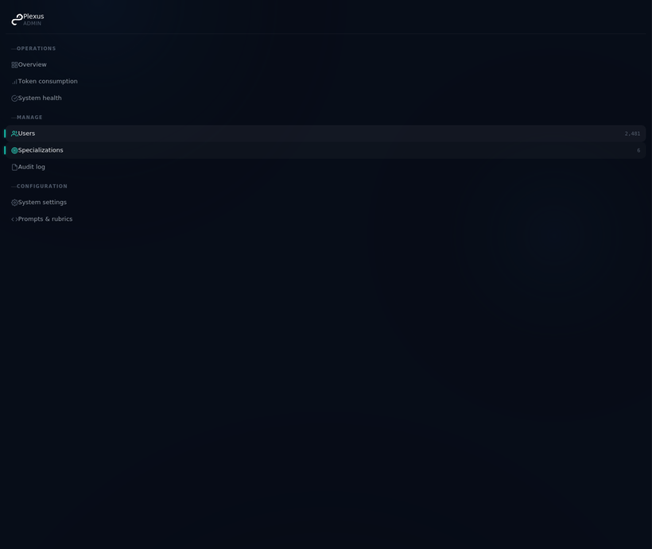
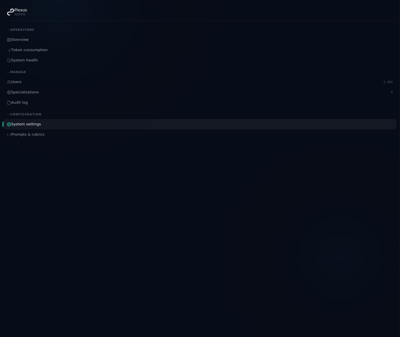
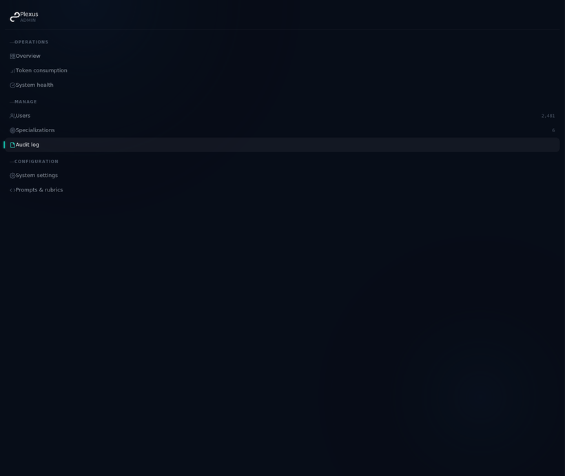

Final consolidated system · V3
The Plexus OSCE Simulator, one system.
A chat-based, AI-modulated clinical exam simulator. This consolidated V3 build brings together the marketing site, every screen, the two client station templates, and every specification — each as a live, navigable page for client acceptance.
Start here
EXPLORE
The V3 screens
Walk the candidate and admin screens, the Station Report, and the Knowledge Bridge remediation engine.
View screens →
READ
The documentation
The Master Blueprint, the two station templates, compliance, the test plan and the implementation plan — all as live pages.
Open docs →
TRACE
Design ↔ Requirements
See how every requirement in the client documents maps to the screen or spec that addresses it — the basis for design sign-off.
View mapping →
What V3 introduces
Difficulty & concealment tiers
One locked case run Basic / Intermediate / Advanced — the AI Dial varies presentation, never the facts or rubric.
Live jargon layer
Flagged terms trigger in-character confusion and an escalating counter that caps the communication domain.
Exam vs Tutor mode
Silent assessment, or Socratic coaching at natural pauses with directive feedback after.
Per-station scoring domains
The Station Report's score wheel renders whatever domains the active station declares; raw marks normalise to 0–100%.
Controlled disclosure
Withheld facts unlock only on the right question, at the granularity asked.
Knowledge Bridge — remediation engine
A learning layer, not a results page: it analyses the Station Report, finds weak domains, and generates targeted mini-cases, MCQs, pearls and framework reviews.
TERMINOLOGY
The Station Report is the results & feedback summary (score wheel, pass outcome, flags). The Knowledge Bridge is a separate remediation engine — a learning layer that analyses the report and generates targeted mini-cases, MCQs, clinical pearls and framework reviews for the domains where the candidate struggled. They are not the same screen.
V3 stations — requirements from both client files
V3 STATION
ITB Pump — Counseling station
PMR-002 · intrathecal baclofen counseling & informed consent. Full requirements, scoring, jargon layer and critical-safety flags.
View requirements →
V3 STATION
Ankylosing Spondylitis — Master station
PLX-PMR-AS-001 · breaking bad news + joint-protection. Tiered concealment, 42-mark scheme, critical-fail items and bridge map.
View requirements →
Screens

SCREEN 01
Exam chat
Candidate encounter — tiers, modes, live jargon layer

SCREEN 02
Station Report
Results & feedback — per-station score wheel, pass outcome, critical-safety flags

NEW · REMEDIATION ENGINE
Knowledge Bridge
Post-simulation remediation engine — gap analysis, then generated mini-cases, MCQs, pearls & frameworks.

SCREEN 03
Dashboard
Candidate home, specialty & session start

SCREEN 04
Sign in / up
Candidate onboarding

SCREEN 05
Profile & history
Attempts, bridges fired, defaults

SCREEN 06
Admin overview
Operator console & activity

SCREEN 07
Token consumption
Model usage & cost

SCREEN 08
Users & specialisations
Cohorts, specialties, config

SCREEN 09
System settings
Thresholds, tiers, jargon, bridges

SCREEN 10
Audit log
Operator & system events
Marketing site
Specifications
PILLAR DOCUMENT
Master Station Blueprint
The reusable authoring template every station follows — synthesised from the two station templates above.
Read →
PILLAR DOCUMENT
Station Compliance
The safety & validity contract a station must satisfy before publication, with the ITB and AS critical-fail sets.
Read →
REFERENCE
V3 Test Plan
Step-by-step acceptance tests across the seven engine pillars, scoring, and per-station end-to-end runs.
Read →
REFERENCE
Implementation Plan
The build specification: stack, data model, subsystems, model routing, and rollout.
Read →
REFERENCE
BRD Gap Analysis
How the prototype maps to the originating business requirements document.
Read →
Plexus OSCE Simulator · V3 · Plexus (client) · Oxolus / Teqplan (delivery)